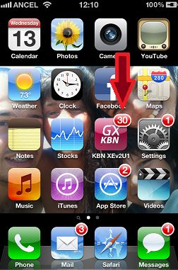
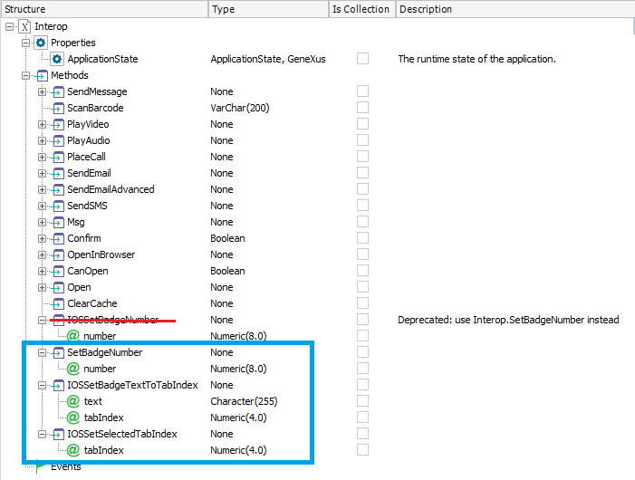
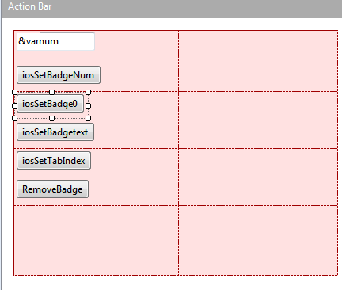
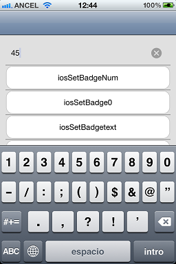
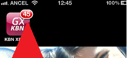
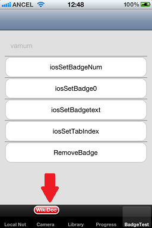

|
For iOS users, badges are a very common UI feature that they are used to seeing in almost every native application which has any of the Push Notifications or Local Notifications feature. What is a badge? As you can see, this screen has five applications with this badge feature on and many more which are not activated. The badge feature shows a number above the app icon in white and red. It is typically used by the iOS native framework to show: a. The number of unread emails you have on your inboxes. b. New text messages in your SMS/iMessage application. c. New upgrades available in the Apple App Store. d. New iOS upgrades available. And many more. So, this feature is really useful and important if an application has push or local notifications and expects the user to react because it has recognized that some action from him is pending on the application. This document is a simple tutorial to add this feature and some more related to an iOS Smart Device Application generated with GeneXus. Step 1: Resources to get things DoneA few methods are provided in the Interop external object to enable and use this feature. 
Step 2: Coding ExampleThe example uses a Menu object with 4-5 items and sets the Control to Tabs on the Dashboard properties. Create the following Panel object: Layout: Events:
Event 'iosSetBadgetext'
Interop.IOSSetBadgeTextToTabIndex('test',2)
Endevent
Event 'iosSetTabIndex'
Interop.IOSSetSelectedTabIndex(3)
Endevent
Event 'RemoveBadge'
Interop.IOSSetBadgeTextToTabIndex("",2)
Endevent
Event 'iosSetBadgeNum'
Interop.SetBadgeNumber(&varnum)
Endevent
Event 'iosSetBadge0'
Interop.SetBadgeNumber(0)
Endevent
Add that Panel to the Dashboard and hit F5. Step 3: ExecutionSetBadgeNumber()   iosSetBadgeText()  Step 4: Complement the Local and Push NotificationsOne of the most common uses of this feature is combined with Local and Push notifications. When a Notification is sent to the user, the badge number is automatically set to +1. So, when the user performs the action expected of the notification the app should subtract one to the current badge number. The subtraction is not automatically done yet, because the action performed after the notification has to be tracked by the application logic. If this isn't done, the badge number over the app icon will never change and look like some notifications are pending.
Notes
|
| Backlinks |
| Interop external object |